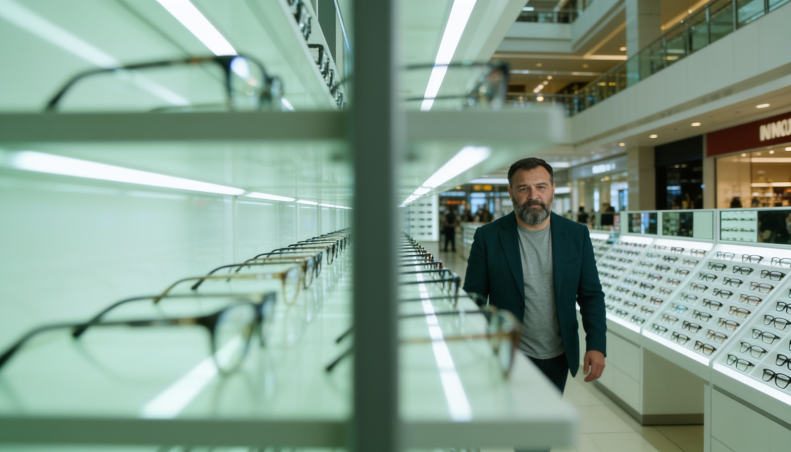
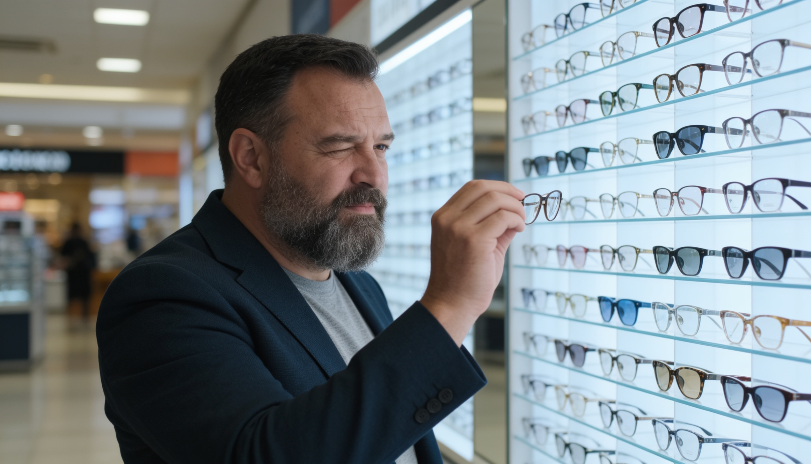
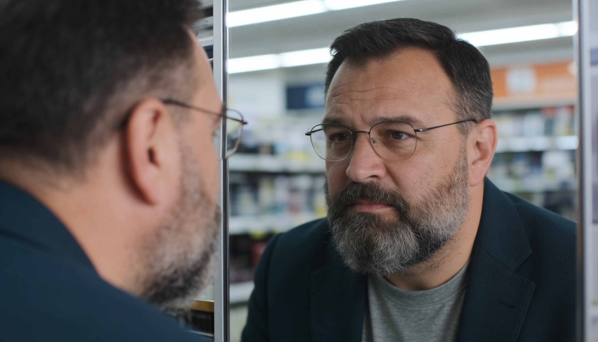
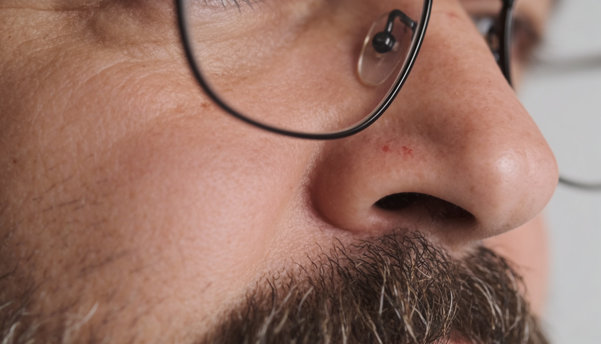
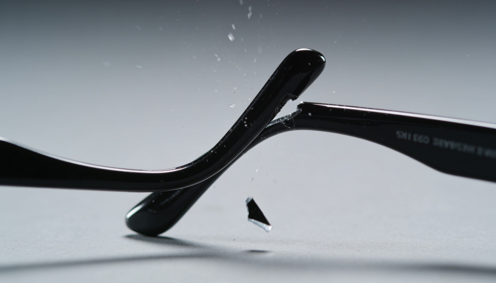
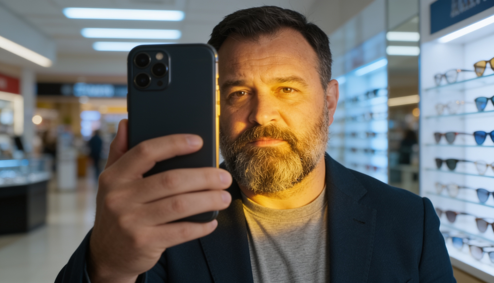
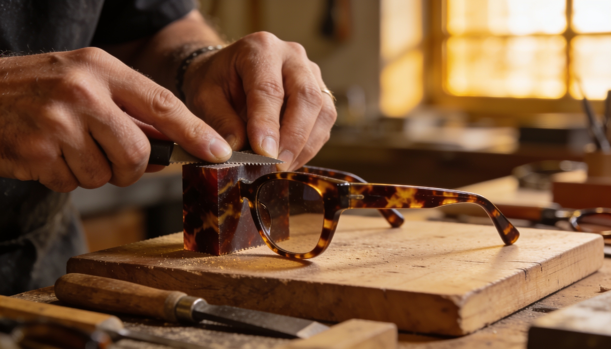
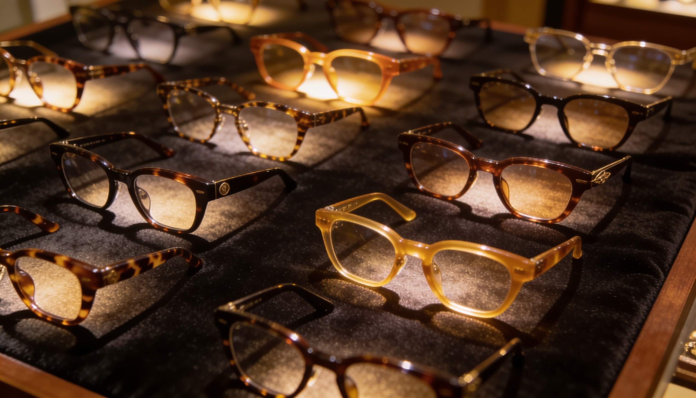
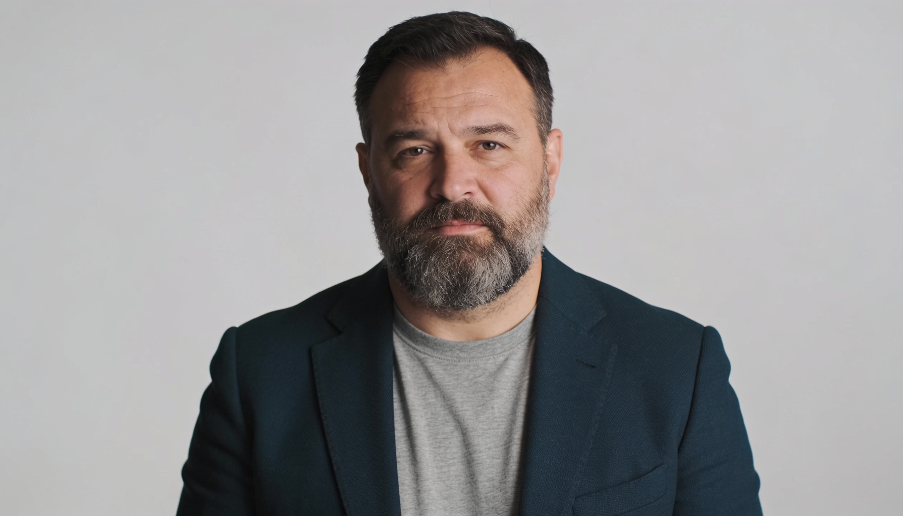

Visual storyboard - 11 shots / ~90 s. Narrator: David Attenborough-style AI VO (TopMediai). The joke is always on the mall and the industry, never on the customer.

0:00–0:08S1“Here, in the fluorescent wilderness of the shopping mall... we find him. The broad-faced professional. A magnificent specimen.”

0:08–0:16S2“The frames guard their true width. He cannot tell how wide they are. So he guesses... and he guesses wrong. Again.”

0:16–0:24S3“Note the beard - a clever adaptation, grown to lengthen the face. But the tiny frames undo his work in a single, tragic instant.”

0:24–0:32S4“And a hidden trap: even a narrow face may carry a wide nose. The mall offers sixteen to nineteen millimetres. He needs twenty-four. It perches. It pinches. It slides.”

0:32–0:40S5“These frames were not crafted. They were injected - poured, cooled, forgotten. In the wild... they do not survive.”

0:40–0:50S6“But the species has adapted. It has found a tool. FitLens measures any face - the broad, and the narrow alike - in sixty seconds.”

0:50–0:58S7“Woolet. Italian Mazzucchelli acetate. Cut and finished by hand. Not injected - crafted.”
“The right width. The right bridge - up to twenty-four millimetres. It fits. Finally.”

1:06–1:14S9“And for the rarest specimens - a size that does not yet exist - three hundred bespoke variations await.”
“At last... the broad-faced professional is seen. Measured. Fitted.”
“Back Woolet on Kickstarter. Founding price - forty percent off.”
